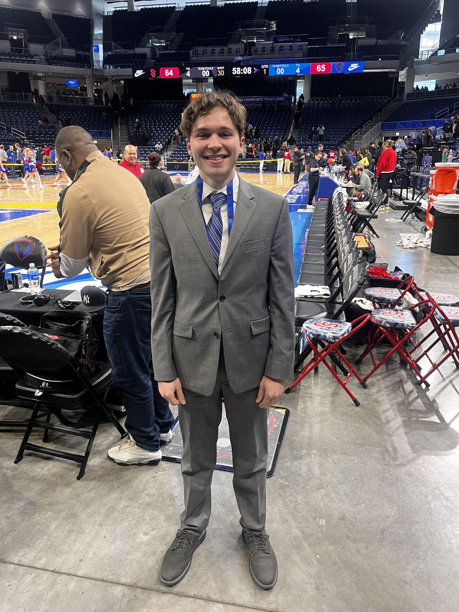

The Mid-Season Comeback: How One Locker Room Defied the Odds
An in-depth look at team chemistry and resilience when a championship roster loses its star player mid-season and rallies for an unexpected playoff run.
Read Story →Sports Journalist | Multimedia Storyteller

I'm a multimedia sports journalist passionate about uncovering the human stories behind the statistics. My work spans video production, investigative reporting, and data visualization, with a focus on how technology and analytics are reshaping modern athletics.
Currently pursuing my master's at Northwestern's Medill School of Journalism, I specialize in long-form features, breaking news coverage, live sports play-by-play broadcasting and sports photography. My beat includes basketball, baseball, and emerging trends in youth sports development.
Areas of Interest: Sports analytics, athlete mental health, youth sports culture, NCAA policy, investigative sports journalism
An in-depth look at team chemistry and resilience when a championship roster loses its star player mid-season and rallies for an unexpected playoff run.
Read Story →Real-time analysis and reporting on the blockbuster trade that sent shockwaves through the league, including exclusive interviews with front office sources.
Read Story →A 24-minute documentary exploring how data science and technology are revolutionizing talent scouting at the high school level, and what it means for the game.
Watch Video →An analysis of rising player salaries, competitive balance, and the economic challenges facing professional sports leagues in the coming decade.
Read Story →A photo essay and audio documentary examining the pre-game routines and psychological preparation of professional athletes across multiple sports.
View Project →An investigative series on the mental health crisis facing student-athletes, examining institutional support systems and calls for reform.
Read Series →An interactive data visualization comparing player salaries to performance metrics across the 2024-25 season. Built with D3.js and Python for data processing.

A scrollytelling piece examining how youth sports participation has changed over 15 years, with special attention to socioeconomic and geographic disparities.

A curated collection of 50+ action shots and behind-the-scenes moments from the championship series, with accompanying captions and stories.

Download my full resume as a PDF for complete work history and references.
Download Resume (PDF)I'm always interested in new storytelling opportunities, collaboration, or just talking sports. Feel free to reach out!